Twin CitiesSantaCycleRampage
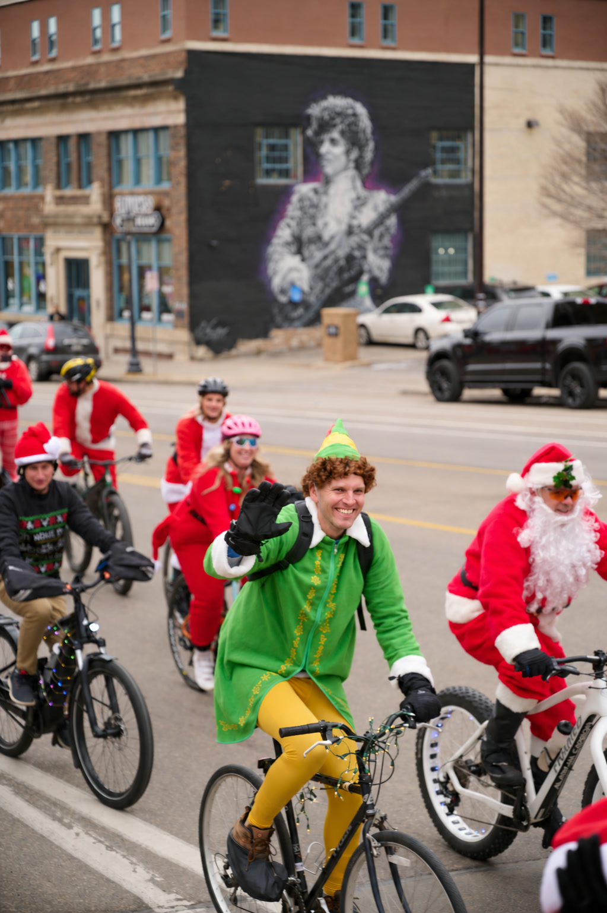
Meet at 10 AM · The Loop
606 Washington Ave N, Suite 100Minneapolis, MN 55401
Start with breakfast. Then ride together to Minneapolis breweries for local craft beer.
Free ride. No registration. Facebook RSVP is optional.
Footage: North Loop Neighborhood News
A little absurdity, a little beer, a gentle disregard for social norms, and a whole lot of bicycles, kindness, and holiday cheer.
Dress like Santa.
Bring a gift.
Decorate your bike.
Drink a beer.
Spread some cheer.
The Twin Cities Santa Cycle Rampage is a free holiday bike ride through Minneapolis, with brewery stops for local craft beer. We decorate our bikes, bring toys for kids in need, and give the people we pass a little unexpected joy.
When we started in 2013, brewery taprooms were still a new thing in Minnesota. Some were just a little space carved out inside the brewery. A place to drink that felt almost like a speakeasy. Since then, we’ve gotten older and started families, and breweries have grown into places with food and room for the kids, too. We still dress like Santa and ride bikes through Minneapolis once a year. And for a moment, we become kids again.


A Brief History of Santa MayhemIt started with a Suicide Club.
That was the name of a secret society of San Francisco urban daredevils whose spirit of mischief eventually gave rise to the Cacophony Society, an influential collection of subversive pranksters, artists, and playful adventurers.
The group helped inspire Chuck Palahniuk’s Fight Club and the creation of Burning Man, while pioneering the kind of organized chaos that would later become flash mobs and urban exploration.
Then, in 1994, they put a busload of Santas in cheap red suits onto the streets of San Francisco to rattle the holidays. Palahniuk himself would become involved in the early Santa mayhem.
These weren’t your ordinary Santas. They stormed department stores, crashed Christmas parties, packed children’s rides, and visited strip clubs. By 1995, Santas were climbing lampposts, blocking traffic, staging a mock public hanging in downtown San Francisco, and getting arrested.
The madness spread across the country and eventually around the world under names like Santarchy, Santa Rampage, and SantaCon.
But somewhere along the way, the joke changed.
What began as counterculture performance art gradually became, in many cities, an excuse to get spectacularly drunk in a Santa suit. New York City’s SantaCon became particularly notorious, earning the nickname “America’s Most Hated Christmas Party” and attracting national headlines for public drunkenness and general bad behavior.
The whole thing had drifted so far from its absurdist roots that some of its original creators held a mock funeral for it.
But somewhere along the way, somebody also put Santa on a bicycle.
In 2012, a guy named Brent attended the Milwaukee Santa Cycle Rampage and decided Minneapolis needed one too. He called up a couple of friends, and in December 2013, they put on Santa suits and rode their bikes around Minneapolis for the day.
More than a decade later, that little ride has grown into nearly 200 Santas rolling through Minneapolis every December.
We like to think we landed somewhere between the original Cacophony Society and the modern SantaCon. A little absurdity, a little beer, a gentle disregard for social norms, and a whole lot of bicycles, kindness, and holiday cheer.
Same cheap suits. Same ridiculous spectacle. Same strangers staring through car windows wondering what the hell they just saw.
But we smile and wave instead of breaking things, and every toy we collect goes to the Salvation Army.
We spread cheer, not fear.
Further reading: An Oral History of SantaCon · Cheap Suit Santas, 1994 · SantaCon’s history and 2014 funeral
Bringa gift.
Bring a new, unwrapped toy and carry it with you on your bike. Gifts are for kids in need. We’ll collect them at a brewery stop along the route.
Your bike is your sleigh.
How it works
Dress like Santa
Put on your Santa suit. Meet at The Loop at 10 AM for breakfast. The address is 606 Washington Ave N, Suite 100, Minneapolis, MN 55401. When it fills up, there are other places nearby. Many riders skip the breakfast and join at the first brewery, our second stop. For them, that is where the day begins. We’ll announce the ride departure time and the first brewery’s location and meetup time when the schedule is settled.
Bring a gift
Bring a new, unwrapped toy for kids in need and carry it on your bike. We’ll collect gifts at a brewery stop along the route. Your bike is your sleigh.
Decorate your bike
Lights, tinsel, and whatever holiday nonsense you can dream up. Make your bike part of the fun. Take it slow. Stay with the group and look out for each other. Bring bells and make some noise. Bring front and rear bike lights. By the last two stops, the sun will be going down.
Drink a beer
We ride from taproom to taproom for local craft beer, a roomful of Santas, and a little holiday mischief.
Spread some cheer
Wave to the people on the sidewalk and watching from their cars. Ring your bell. Give them something to smile about. Keep riding.
Footage: Vitaly Katasonov
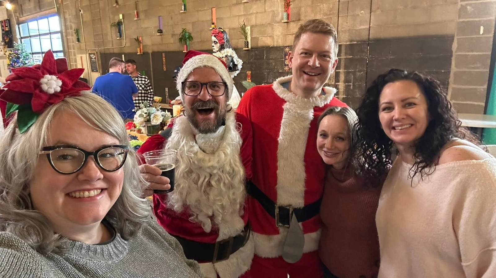
2026 Schedule
We start at The Loop and ride to five or six breweries. The full ride is about 15 miles. We take it slow. The 2026 stops are still being settled. We’ll post the breweries and approximate arrival and departure times closer to ride day.
The Loop
606 Washington Ave N, Suite 100, Minneapolis, MN 55401. Meet for breakfast before the ride.
Brewery TBD
Brewery TBD
Brewery TBD
Brewery TBD
Brewery TBD
Final brewery TBD
Times are approximate. For late-breaking changes on ride day, Facebook remains the live update channel.
The vibe
There’s something about dressing like Santa. People drop their guard. The things that usually separate us seem unimportant. It feels like being a little kid again, when you could walk up to another kid and ask, “Want to play?”

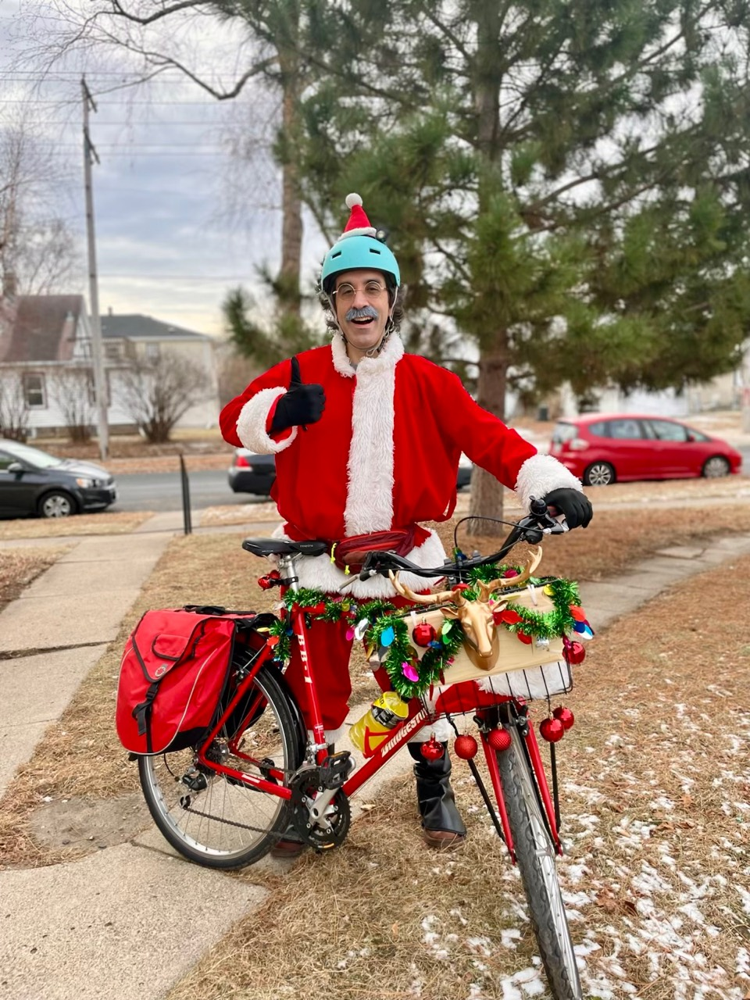
Decorate your bike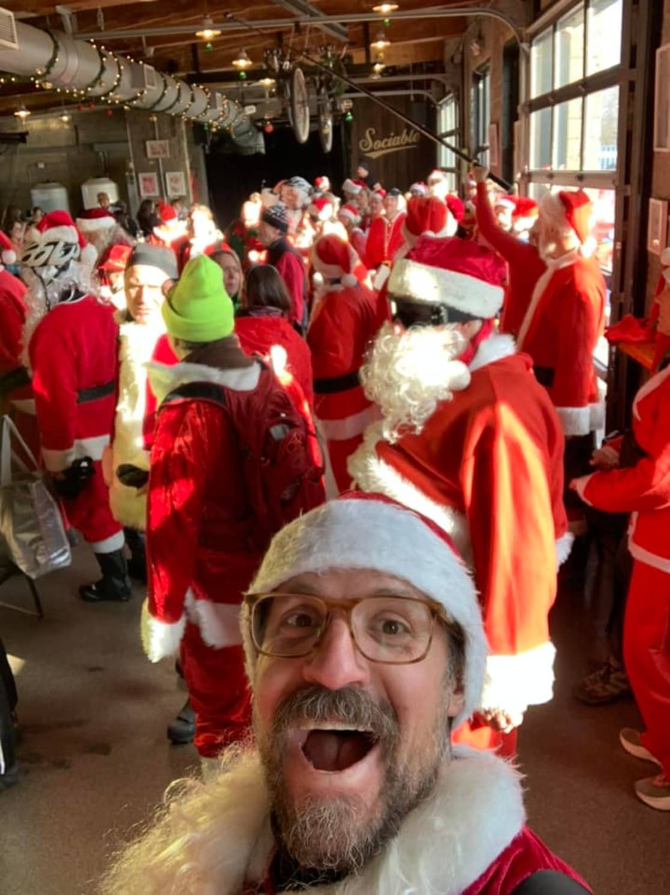
Raise a little cheer Make the city smile
Make the city smileDress like Santa.
A Santa suit is the idea. We’ve also had Christmas trees, Krampus, and a whole assortment of characters from the old stop-motion Christmas specials.
Ten friends started it.
178 riders joined in 2025, our biggest year yet.


The first ride.
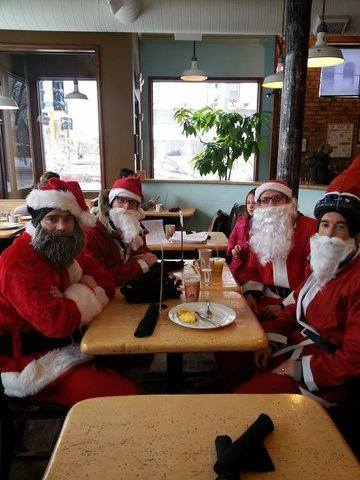
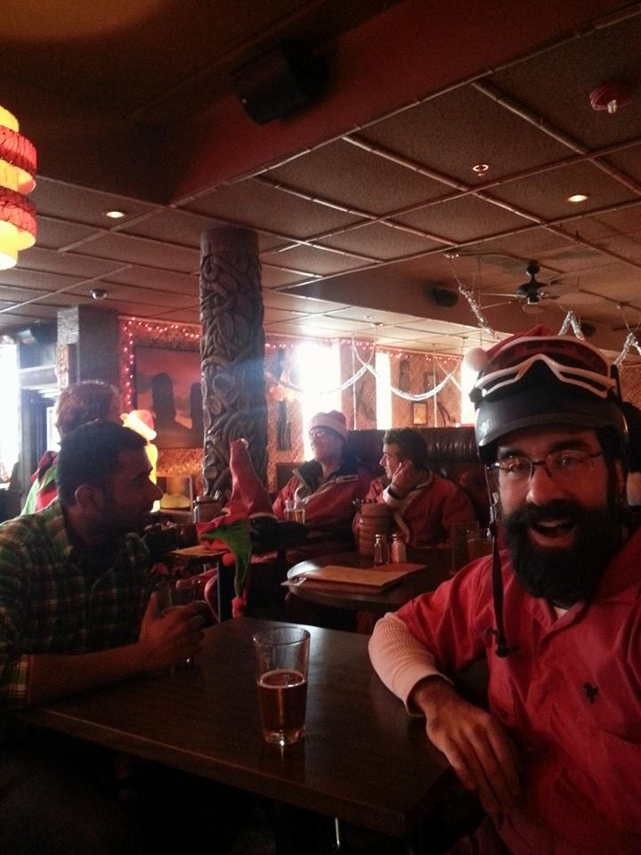
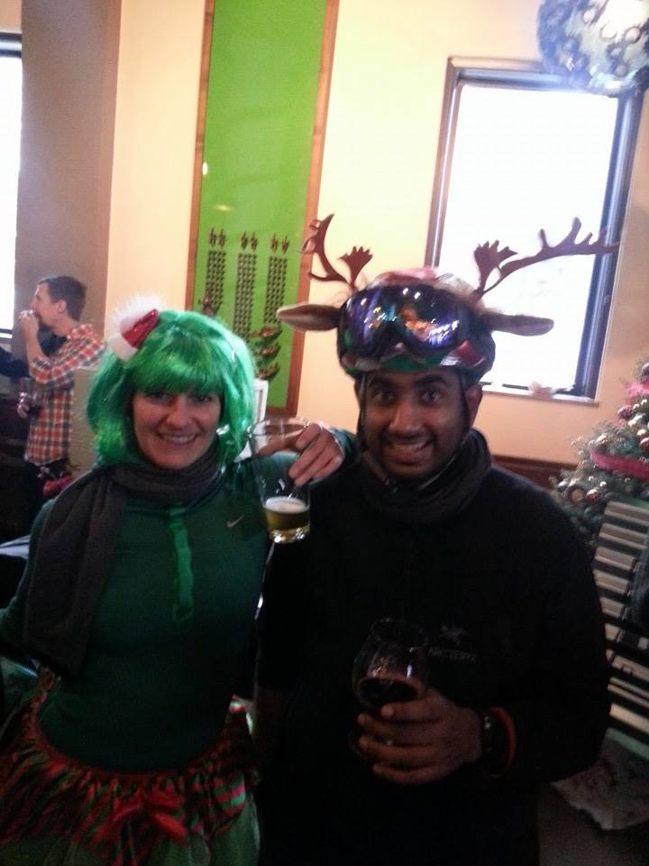
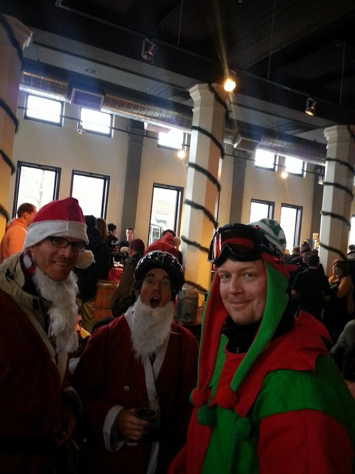
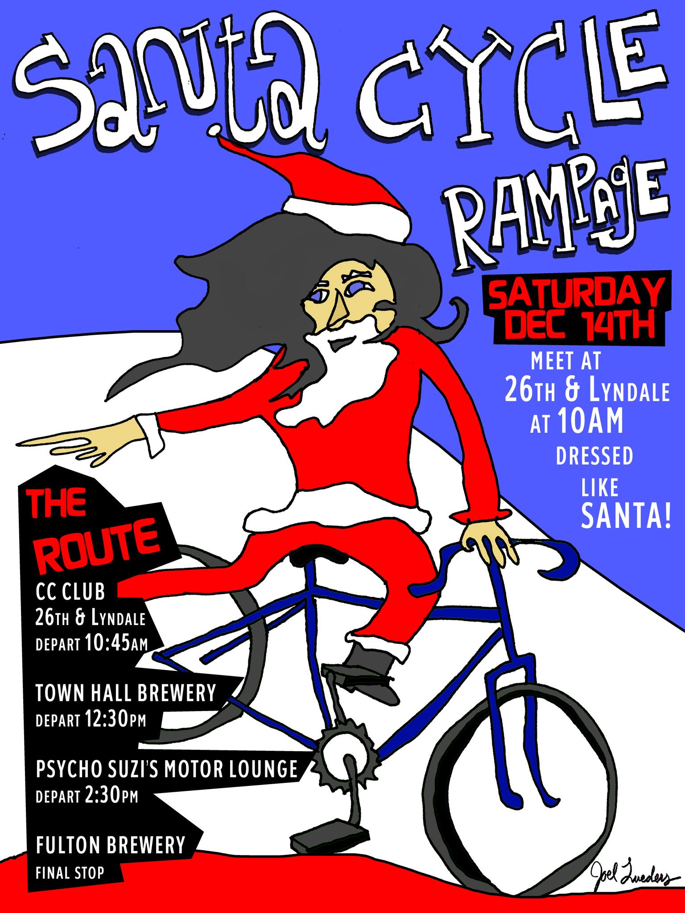
2013 · The first poster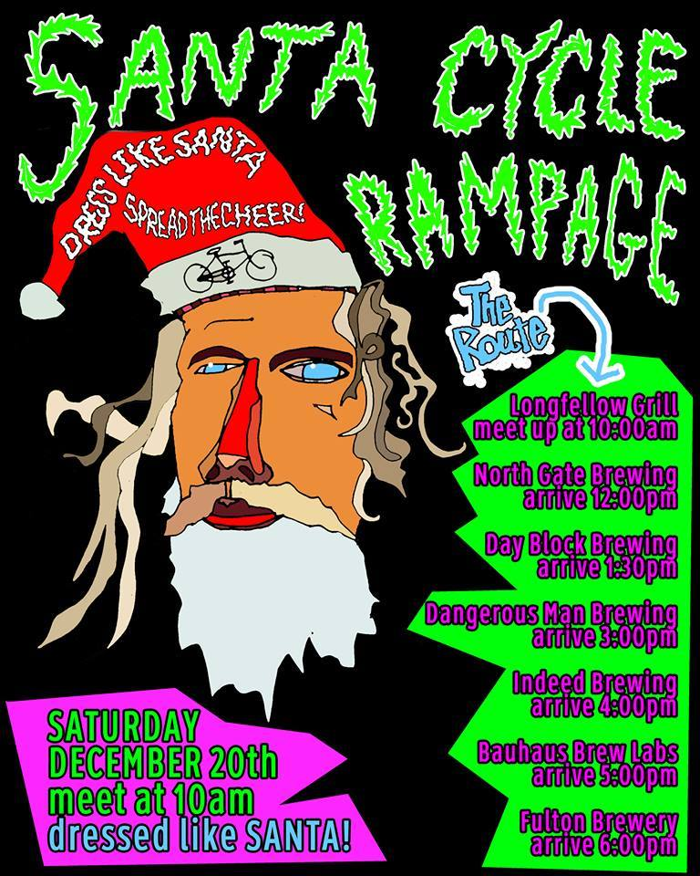
2014 · I Sing the Santa Electric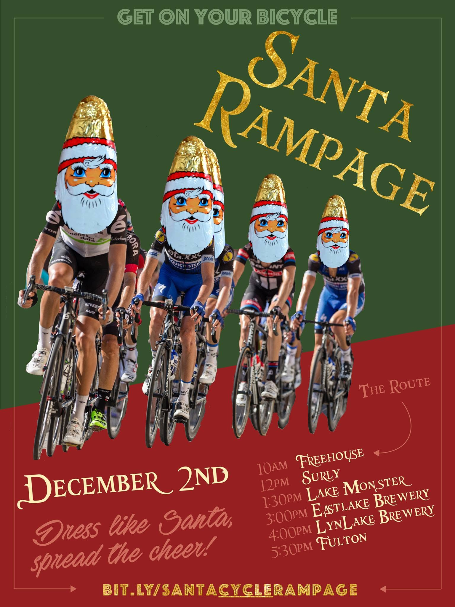
2017 · Tour de Chocolate Heads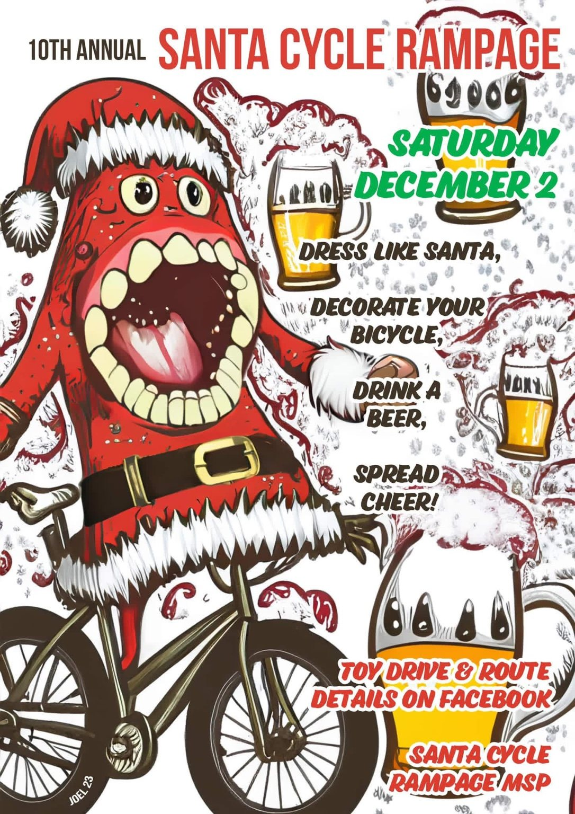
2023 · Big mouth strikes again.The Santas keep rolling.
Footage: North Loop Neighborhood News
FAQ
Do I need to register?
No. The ride is free and there is no registration. Show up and ride. You can RSVP on Facebook—it’s optional, but appreciated!
Can I come alone?
Yes. You don’t need to know anyone to join us. Come on your own or bring a friend. Put on your Santa suit, say hello, and ride with the group.
Do I have to dress like Santa?
A Santa suit is the idea, and most of us wear one. You’re still welcome if you turn up as something else. We’ve had Christmas trees, Krampus, and a whole assortment of characters from the old stop-motion Christmas specials.
Do I have to drink?
Nope. Drinking is entirely optional. You're here to ride bikes, wear ridiculous clothes, and spread some holiday cheer.
If you do get smashed, lock up your bike and call a Lyft. Seriously.
One infamous year, we had half a dozen college students who were completely trashed by the second stop, riding down the middle of the road in a blizzard.
We'd prefer not to repeat that particular Christmas miracle.
Can I come if I don’t ride?
Absolutely. Meet us at an announced brewery stop, or travel between stops by car. Some Santas do. Bring friends for lunch and surprise them when we arrive. Arrange a sober driver if you’re drinking.
Can I join partway through?
Yes. Meet the group at any brewery stop. Many riders join at the first brewery after breakfast at The Loop.
What if there’s snow?
We’ve ridden through snowstorms, ice, freezing rain and, unfortunately, increasingly warm weather. Christmas is starting to feel like Christmas in July. Yikes.
It’s Minneapolis in December, so dress appropriately. Studded tires are highly recommended. If you’re getting just one, put it on the front wheel; you can find one for around $75, and it’s a game changer on icy streets. Two are even better, especially for braking and traction.
Ultimately, ride only in conditions you’re comfortable with, and make sure your bike is set up accordingly. Even in the coldest years, people often start shedding layers by midday.
You may see Santas ducking into brewery bathrooms to peel off sweaty sweatpants beneath their costumes.
Turns out Santa suits don’t breathe particularly well.
Can I bring a toy to donate?
Yes. Bring a new, unwrapped toy. Gifts are for kids in need. Carry yours on your bike, like Santa carrying presents in his sleigh.
Are kids allowed?
Yes, but with some caution. The full ride is about 15 miles, and it gets pretty dark by the last two stops. We’ve had kids of all ages, but we recommend joining earlier in the day. Kids need a parent or guardian. Some ride along for just one or two stops.
We’ve also had families alternate riding and driving: one parent bikes while the other drives with the kids, and then they switch. If you’re driving, stay sober.
This event isn’t really about the drinking. It’s an excuse to see the unexpected joy on the faces of strangers. For a moment, we become kids again.
Ride at your own risk and follow traffic laws.
Is this a race?
Absolutely not. It's a social group ride.

Join the joy
The website is home base. Facebook is where we post current announcements, schedule updates and ride-day changes.
Follow ride updates on Facebook ↗ Follow on Instagram ↗